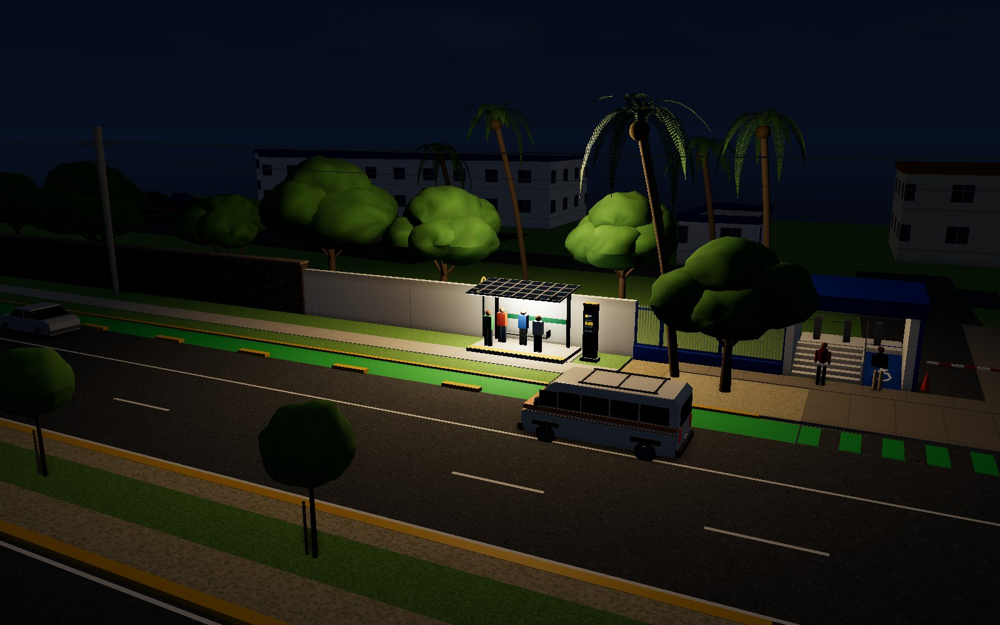
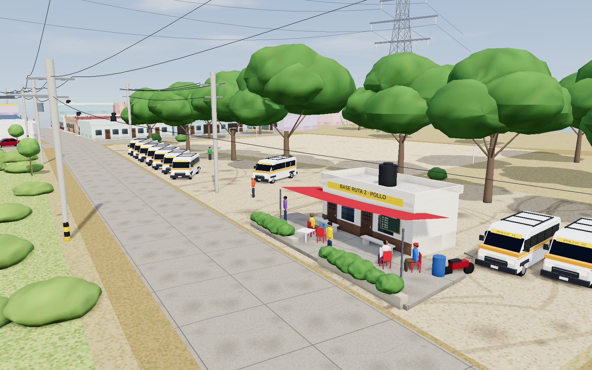
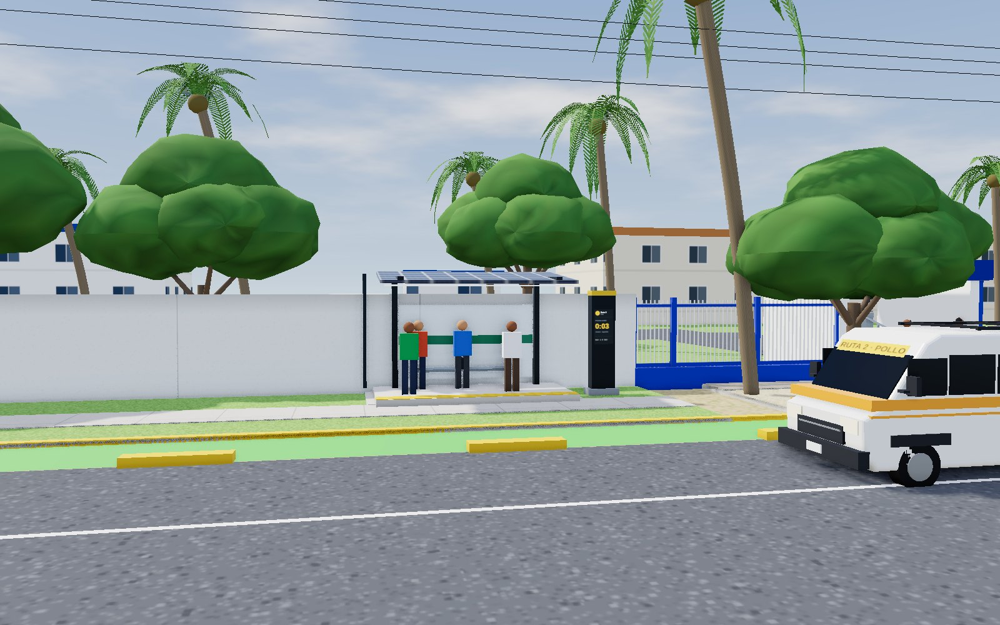

LZC.Ficha técnica · Rutas LZC · Ruta 2 «Pollo»
Plataforma de transporte en combi · Lázaro Cárdenas, Michoacán
Ficha técnica
Rutas LZC: paradas con caseta, contador de llegada y mapa en vivo para las combis de la ciudad. Esta ficha documenta la ruta piloto, la Ruta 2 «Pollo»: base, recorrido, paradas, caseta y metodología.

| Proyecto | Rutas LZC · plataforma de transporte en combi |
|---|---|
| Ruta piloto | Ruta 2 «Pollo» |
| Elaboró | {Nombre del equipo} · 5 integrantes |
| Fecha | Octubre de 2026 |
| Fase | 1 de 3 · Ruta piloto |
| Base | Calle Tamarindo, Col. Benito Juárez |
Contenido
Rutas LZC · Transporte en combi · Lázaro Cárdenas, Mich.Rev. 10/2026
LZC.Ficha técnica · Rutas LZC · Ruta 2 «Pollo»
01 · Recorrido
Recorrido de la Ruta 2
Parámetros de operación
| Longitud de la vuelta | |
|---|---|
| Duración de la vuelta | |
| Velocidad promedio | |
| Frecuencia | |
| Unidades necesarias | |
| Paradas propuestas | |
| Base |
Tramos
| De → a | Distancia | Tiempo |
|---|
Calles en orden
Recorrido real dibujado por el equipo en Google Earth. Frecuencia y velocidad: supuestos de la simulación.
Rutas LZC · Transporte en combi · Lázaro Cárdenas, Mich.Rev. 10/2026
LZC.Ficha técnica · Rutas LZC · Ruta 2 «Pollo»
Base
Base de la Ruta 2 ·

Datos de la base
Ubicación en el recorrido
Operación
- Las unidades esperan su turno estacionadas frente a la base
- Primera salida a las 6:00 y última a las 22:00
- Salen por Calle Tamarindo hacia el Libramiento a Sicartsa
Rutas LZC · Transporte en combi · Lázaro Cárdenas, Mich.Rev. 10/2026
LZC.Ficha técnica · Rutas LZC · Ruta 2 «Pollo»
Datos de la parada
Elementos de la parada
- Caseta solar sobre plataforma con franja táctil
- Contador de llegada con pantalla a dos caras
- Disco de parada «R2» en poste independiente
- Código QR a la pantalla de parada en vivo
Ubicación en el recorrido
Entorno
Observaciones:
Rutas LZC · Transporte en combi · Lázaro Cárdenas, Mich.Rev. 10/2026
LZC.Ficha técnica · Rutas LZC · Ruta 2 «Pollo»
Caseta
Caseta solar y contador de llegada
Caseta
| Estructura | Marcos de acero en voladizo, acabado grafito |
|---|---|
| Cubierta | Paneles fotovoltaicos, 4.60 × 2.50 m, inclinación 6° |
| Iluminación | Tira LED bajo el borde frontal |
| Mobiliario | Banca de 2.40 m con descansabrazos; respaldo de cristal esmerilado |
| Plataforma | Concreto, 4.80 × 2.40 m, a nivel de banqueta |
| Accesibilidad | Franja táctil amarilla del lado de la calle |
| Altura libre | 2.90 m |
Contador de llegada
| Tipo | Tótem con pantalla a dos caras |
|---|---|
| Medidas | 0.62 × 0.30 × 2.50 m |
| Muestra | Minutos y segundos para la próxima combi; «En parada» cuando llega |
| Energía | Paneles de la cubierta |
| Ubicación | 3.3 m a un lado de la caseta |

Rutas LZC · Transporte en combi · Lázaro Cárdenas, Mich.Rev. 10/2026
LZC.Ficha técnica · Rutas LZC · Ruta 2 «Pollo»
Metodología
Metodología y fuentes
- 01LevantamientoRevisión de cada esquina en Google Street View y en imagen satelital: fachadas, banquetas, camellones, mobiliario y vegetación.
- 02Trazo del recorridoRecorrido real de la Ruta 2 dibujado por el equipo en Google Earth; calles y edificios de OpenStreetMap.
- 03Modelado 3DMaqueta a escala de la base y de cada parada con Three.js: calles, casas, comercios, vegetación, caseta, contador, combis, peatones y tránsito.
- 04Análisis de usoDía de servicio simulado (una combi cada 15 min), posición del sol, iluminación nocturna y cobertura a pie de cinco minutos (400 m).
Fuentes y herramientas
| Cartografía | © colaboradores de OpenStreetMap; estilo de OpenFreeMap |
|---|---|
| Recorrido | Google Earth (trazo del equipo, archivo KML) |
| Referencia visual | Google Street View |
| Mapa interactivo | MapLibre GL |
| Modelado 3D | Three.js; caseta propia en Blender (.glb) |
Pendientes
- Ubicar más paradas a lo largo de los 19.5 km del recorrido
- Diseño definitivo de la caseta (fase 2)
- Horario real y número de unidades
- Sumar las siguientes rutas y más paradas
Elaboró
{Nombre}
Revisó
{Nombre}
Vo. Bo.
{Nombre}
Rutas LZC · Transporte en combi · Lázaro Cárdenas, Mich.Rev. 10/2026